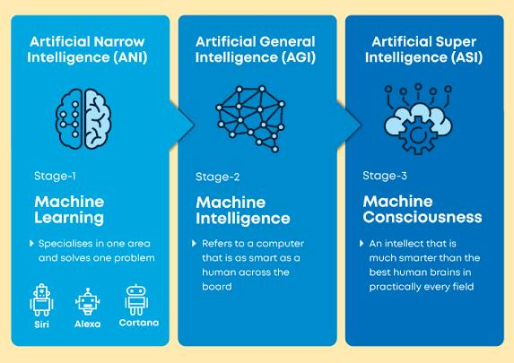

Artificial intelligence is the behavior and specific characteristics of computer programs that make them mimic human mental capabilities and working patterns. Among the most important of these characteristics is the ability to learn, infer, and react to situations not programmed in the machine. However, this term is controversial due to the lack of a specific definition of intelligence. And artificial intelligence is a branch of computer science. Artificial Intelligence is defined by many literature as “the study and design of smart clients,” and a smart client is a system that accommodates its environment and takes situations that increase its chance of success in achieving its mission or the mission of its team. This definition, in terms of goals, actions, perception, and environment, refers to Russell & Norvig (2003) and also other definitions include knowledge and learning as additional criteria. Computer scientist John McCarthy originally coined this term in 1956, [1] and he defined himself as “the science and engineering of making smart machines. Andreas Kaplan and Michael Heinleen define artificial intelligence as "the ability of a system to properly interpret external data, learn from this data, and use that knowledge to achieve specific goals and tasks through adaptation" artificial intelligence may be defined as the art of creating machines that performed functions that need intelligence when performed by humans and care about the automation of intelligence behavior in 1940 ( alan turing's team ) present the first operational computer, in 1943 mc culloch and pitts : initiated research on neural networks .
